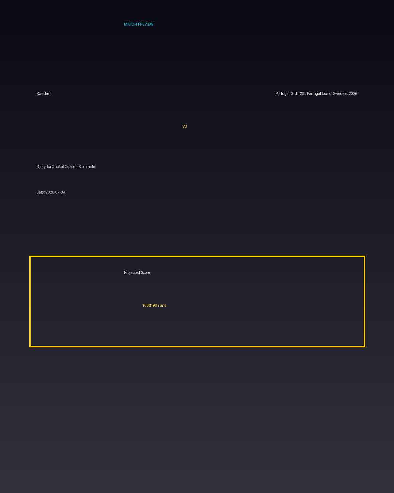

Sweden vs Portugal, 3rd T20I, Portugal tour of Sweden, 2026
Date: 2026-07-04
Venue: Botkyrka Cricket Center, Stockholm


Form Guide
Sweden: 🟩 🟥 🟩 🟩 🟥
Portugal, 3rd T20I, Portugal tour of Sweden, 2026: 🟥 🟩 🟥 🟥 🟩
Pitch Report
Balanced wicket with moderate scoring conditions.
Projected Score
150–190 runs
Key Players
- Sweden Key Batter — Batsman
- Sweden Strike Bowler — Bowler
- Portugal, 3rd T20I, Portugal tour of Sweden, 2026 Key Batter — Batsman
- Portugal, 3rd T20I, Portugal tour of Sweden, 2026 Strike Bowler — Bowler
Advanced Win Probability
Sweden: 64.3%
Portugal, 3rd T20I, Portugal tour of Sweden, 2026: 35.7%
AI Match Prediction
Based on venue conditions, a projected scoring range of 150–190 runs, recent form (with Sweden appearing slightly stronger), and the pitch profile ('Balanced wicket with moderate scoring conditions.'), this matchup appears to present Sweden entering as clear favorites. Early momentum and top-order execution will likely determine the winner.
